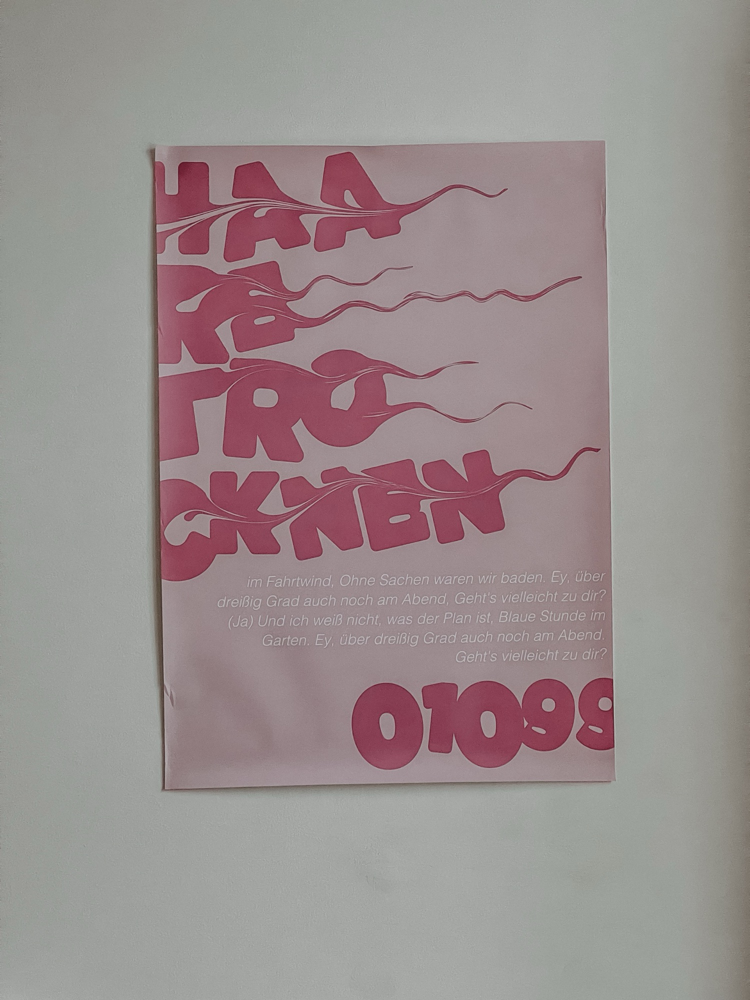
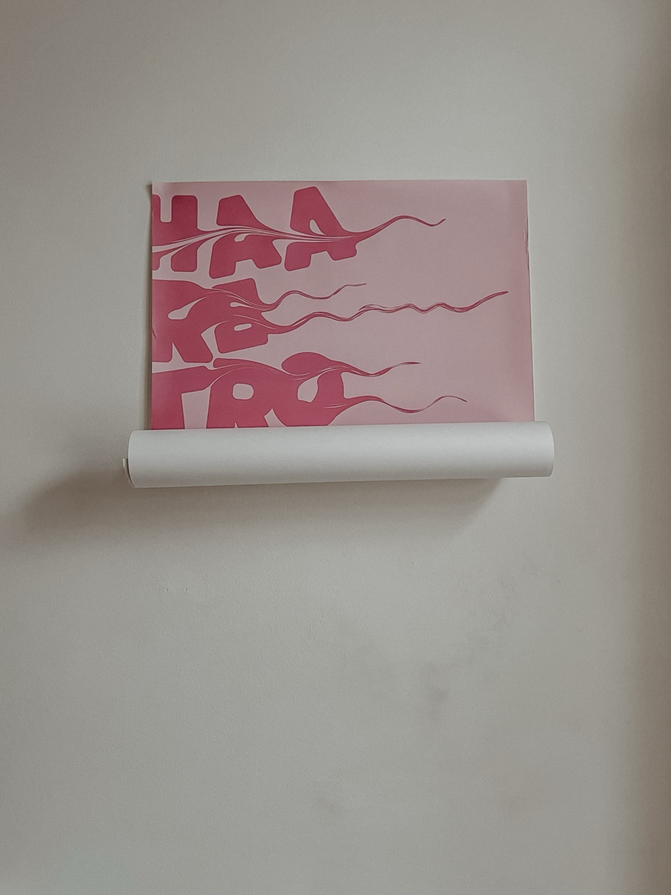
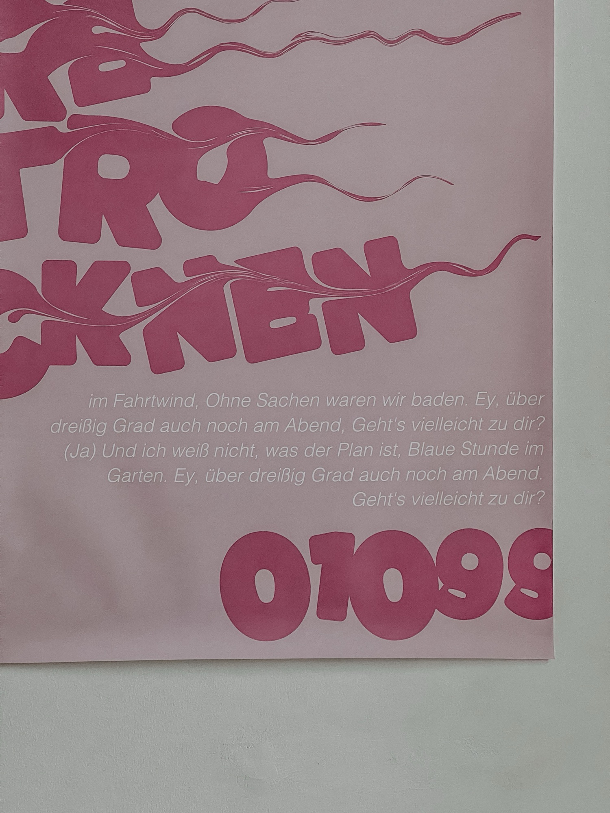
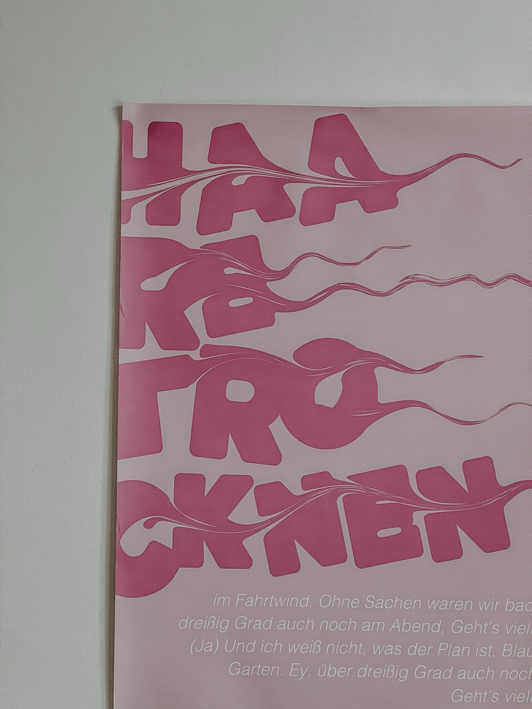

Wie visualisiert man das Gefühl eines lauen Sommerabends nur mit Schrift und einer einzigen Farbe? Im Kurs Plakatgestaltung stellte ich mich dieser Aufgabe mit dem Song „Haare Trocknen" von 01099. Der Track verkörpert für mich die ultimative Freiheit: Die Fahrt nach Hause vom See, offene Fenster und die warme Luft. Das Plakat übersetzt diesen „Vibe" in eine rein typografische Komposition. Durch den bewussten Verzicht auf Farbe und Bildmotiv muss die Schrift selbst die Atmosphäre tragen. Die Anordnung und der Duktus der Typografie versuchen, die Leichtigkeit, den Fahrtwind und die nostalgische Wärme dieses Moments einzufangen und visuell spürbar zu machen.



